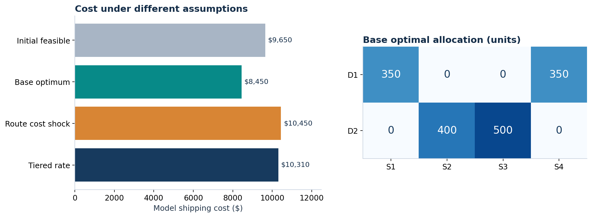
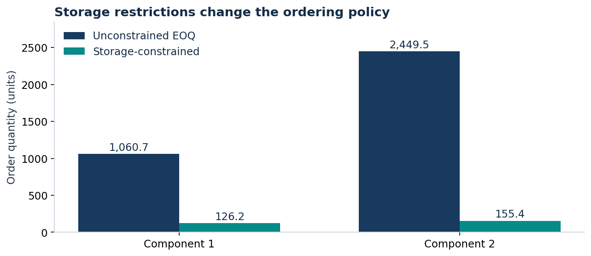
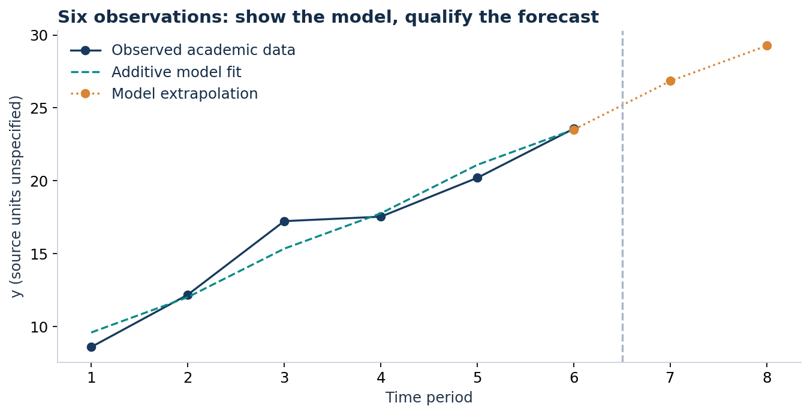

Individual coursework · FIT3158 · 2026
Business Decision Modelling
Using optimisation and analytical models to explain how business constraints change a decision.
- My role / scope
- Individual model formulation, Excel analysis and interpretation; later AI-assisted portfolio reconstruction and Python verification.
- Evidence to inspect
- Recomputed charts, assumptions, shipping allocation and model limitations.
- Context
- Academic scenarios; no real-client deployment or realised savings claimed.
Lead case: supply four stores from two depots
Two depots can supply 700 and 900 units. Four stores require 350, 400, 500 and 350 units. The decision is how much to ship along each route while meeting demand at minimum cost.


| Scenario | Model cost | Decision meaning |
|---|---|---|
| Initial feasible allocation | $9,650 | A feasible starting point from the workbook. |
| Base optimum | $8,450 | A $1,200 / 12.44% model reduction relative to that starting point. |
| D2–S3 rate rises to $10 | $10,450 | Multiple optimal allocations can exist. |
| First 35 units at $6, then $10 | $10,310 | The tiered rate reduces the stressed optimum by $140. |
What I modelled
| Business question | Method | Selected result |
|---|---|---|
| What should we produce? | Linear programming and sensitivity | Product 2: 24 units; $8,640 model profit. Resource 2 is binding. |
| How much should we order? | EOQ and storage-constrained optimisation | Constrained quantities: 126.20 and 155.35 units. |
| Should we test the market? | Decision tree and expected monetary value | Test-first EMV $9,100 vs direct-launch EMV −$10,000 under stated assumptions. |
| What does a short series suggest? | Trend and additive regression | Period 7: 26.85; period 8: 29.27, as extrapolations. |


A recommendation needs limits
I separate model output from operational evidence. Savings are comparisons within an academic model. Optimised quantities depend on the supplied costs and constraints. Multiple optima can change allocations without changing cost.
The forecasting example has only six observations. Its 4.83% trend MAPE is training error, not evidence of future prediction accuracy. Advanced binary-threshold variants in the original coursework are outside the independently validated subset.


Inspect the calculation
The private evidence collection includes a five-sheet Excel reading edition, source reports, numerical inputs, computed outputs and a Python rebuild script. Excel recalculates arithmetic and the simple trend; optimal decision quantities and additive coefficients are saved results requiring an external re-solve after relevant inputs change.
Continue the conversation
Want to discuss the decisions?
I can walk through the evidence and explain the boundaries of my contribution.